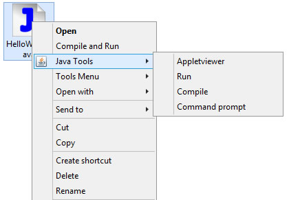

今天我完成了我java編譯環境的代碼，把他們放出來吧。
我放一張我JAVA環境的截圖吧。只要我選擇了對應的菜單，就能夠完成對應的操作。

要想做到這樣的效果，需要用到批處理(bat)和註冊表(regedit)相關的知識。
首先需要創建幾個如下的批處理文檔，文件擴展名為cmd或者bat。
java_appletviewer
創建一個HTML文件以運行Java applet。
@echo off cd %~d1%~p1 if exist %~n1.class ( del %~n1.class ) echo on @javac %~nx1 -encoding UTF-8 @echo off if exist %~n1.class ( del %~n1.html 2>nul echo.^<html^> >>%~n1.html echo.^<head^> >>%~n1.html echo.^<title^>%~n1 appletviewer^</title^> >>%~n1.html echo.^<head^> >>%~n1.html echo. >>%~n1.html echo.^<body^> >>%~n1.html echo.^<applet code=^"%~n1.class^" width=640 height=480^> >>%~n1.html echo.^</applet^> >>%~n1.html echo.^</body^> >>%~n1.html echo. >>%~n1.html echo.^<html^> >>%~n1.html appletviewer %~n1.html del %~n1.html ) pause
java_compile
編譯java文件，若編譯失敗，顯示失敗信息。
注意：該程式會刪除最後一次編譯的文件，有待改進。
@echo off cd %~d1%~p1 if exist %~n1.class ( del %~n1.class ) echo on @javac %~nx1 -encoding UTF-8 @pause
java_compile_run
編譯並且運行，基本與java_compile相同，在編譯成功時，運行程式。
@echo off cd %~d1%~p1 if exist %~n1.class ( del %~n1.class ) echo on @javac %~nx1 -encoding UTF-8 @echo off if exist %~n1.class ( echo Compile successful java %~n1 ) pause
這寫代碼具體的意思，有興趣可以查batscriptr的語法。我就不多說了。因為講解代碼真的很無聊，就像對牛彈琴一樣。或者就像「你沒必要給還在上幼稚園的孩子說明避孕套的使用方法」一樣的道理。懂的人自然會懂的，不懂的人，和他們說又有什麼用呢？
那麼，不談代碼的構成，這些代碼該怎麼用呢？
至於這個效果是怎麼做出來的，改天，我寫註冊表相關知識的時候，會告訴大家的。敬請期待吧。